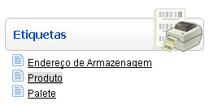
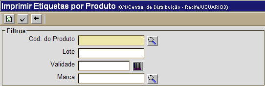
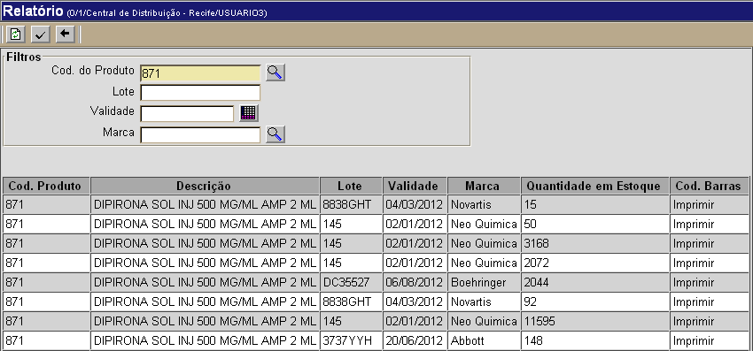
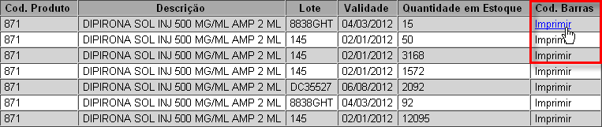
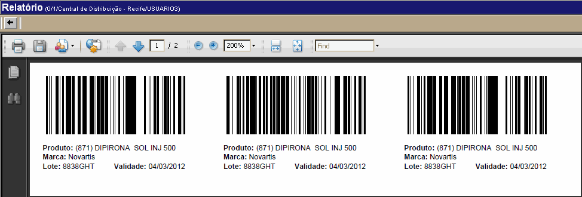

Imprimir Etiquetas por Produto [ Voltar ]
Utilize esta tela para imprimir etiquetas de produtos por lote/validade.
Para acessar o formulário, vá ao menu "Etiquetas" na página inicial e clique em "Produto".

Ao clicar no formulário, a seguinte tela
será exibida:

Siga os passos abaixo:
1º Passo: informe os dados do produto desejado. O campo "Cód. do Produto" é obrigatório.
- Cód. Produto. Informe aqui o código do produto para o qual deseja imprimir etiquetas. Se necessário, clique no botão
 [Procurar] para selecionar o produto a partir de uma listagem de produtos cadastrados; [Procurar] para selecionar o produto a partir de uma listagem de produtos cadastrados;
- Lote. Informe um lote específico de produto;
- Validade. Informe aqui a validade referente ao produto selecionado.
Dicas
para preenchimento dos campos de data:
- Data atual:
digite o sinal .
(ponto) e pressione a tecla "Enter" para que o
sistema retorne a data atual;
- Data do mês corrente:
digite o dia do
mês e pressione a tecla "Enter" para que o sistema retorne
o mês e ano correntes;
- Dias a contar da data
atual: digite o sinal + (mais) ou - (menos)
antes do número de dias em referência à data atual e pressione
a
tecla "Enter" para a data anterior ou posterior à data atual.
Exemplo:
se a data atual é 20/10/2010,
digite "+10"
e pressione a tecla "Enter" para que o sistema retorne o dia 30/10/2010.
- Marca. Se desejar retornar produtos de uma marca específica, especifique-a neste campo. Clique no botão [Procurar] para selecionar a marca a partir de uma listagem de marcas cadastradas.
2º
Passo: clique no botão para processar a consulta. Os resultados da consulta serão exibidos na parte inferior da tela. para processar a consulta. Os resultados da consulta serão exibidos na parte inferior da tela. 
3° Passo: clique no link "Imprimir" para a linha do produto, lote e validade desejados. No canto direito da tela, a coluna "Cód. Barras" exibe o link para visualização e impressão das etiquetas.

Ao clicar no link, a seguinte tela será exibida:

4° Passo: para imprimir a etiqueta, clique no botão  . Para voltar à tela anterior, clique em . Para voltar à tela anterior, clique em  [Voltar]. [Voltar].
Ir
para o topo da página
|